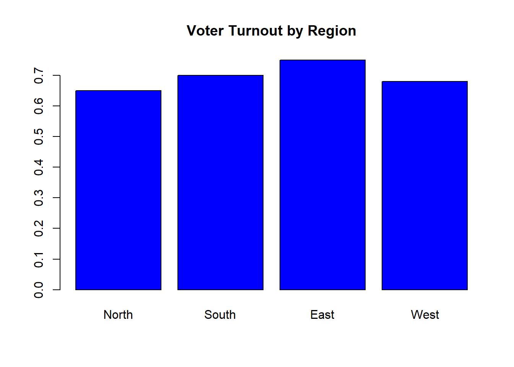
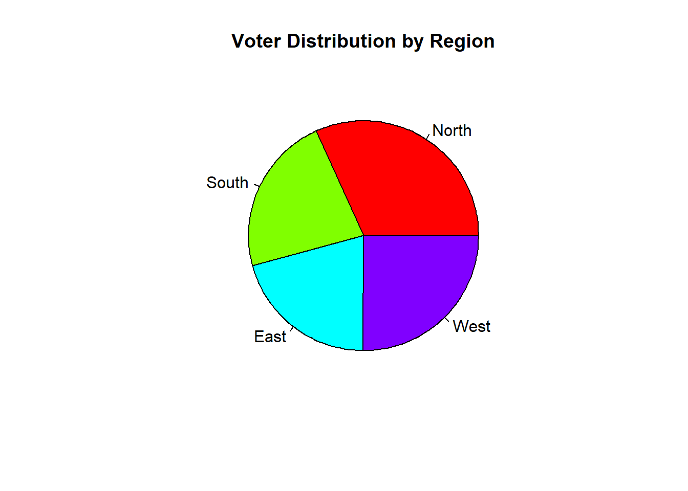
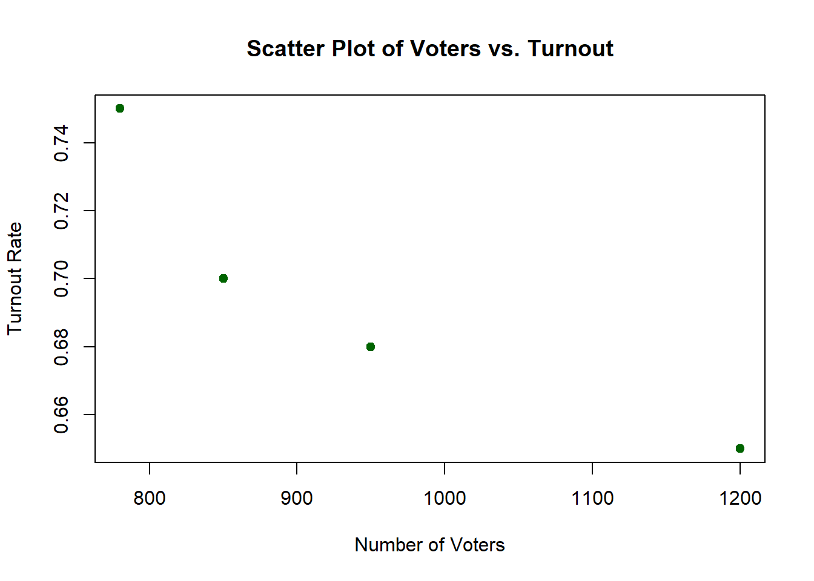

# Addition
2 + 3[1] 5# Subtraction
7 - 4[1] 3# Multiplication
6 * 9[1] 54# Division
12 / 4[1] 3# Exponentiation
2^3[1] 8Introduction to R for Political Science
Welcome to the world of R programming! In this document, we will explore the basics of R, focusing on concepts that are particularly useful for political science students. By the end of this guide, you will be comfortable with fundamental R concepts, enabling you to perform basic data analysis.
Before we begin coding, let’s make sure you have R and RStudio installed on your computer.
Install R: Download R
Install RStudio: Download RStudio
R can be used to perform basic arithmetic calculations:
# Addition
2 + 3[1] 5# Subtraction
7 - 4[1] 3# Multiplication
6 * 9[1] 54# Division
12 / 4[1] 3# Exponentiation
2^3[1] 8Logical operations are essential in programming and data analysis, allowing you to make decisions based on conditions. In R, logical expressions return TRUE or FALSE and are often used in filtering data, making comparisons, and controlling the flow of a program.
Here are some common logical operators in R:
== : Equal to
!= : Not equal to
> : Greater than
< : Less than
>= : Greater than or equal to
<= : Less than or equal to
# Check if two values are equal
5 == 5 # TRUE[1] TRUE# Check if two values are not equal
5 != 3 # TRUE[1] TRUE# Greater than comparison
7 > 14 # FALSE[1] FALSE# Less than or equal to comparison
3 <= 5 # TRUE[1] TRUELearn how to store values in variables for later use:
# Assign a value to a variable
number_of_voters <- 500
# Use the variable in calculations
voter_turnout <- number_of_voters * 0.75
voter_turnout[1] 375Data frames are essential in R for handling datasets, which are often in the form of tables:
# Create a simple data frame
election_data <- data.frame(
Region = c("North", "South", "East", "West"),
RegionID = c(1, 2, 3, 4),
Voters = c(1200, 850, 780, 950),
Turnout = c(0.65, 0.70, 0.75, 0.68)
)
# View the data frame
print(election_data) Region RegionID Voters Turnout
1 North 1 1200 0.65
2 South 2 850 0.70
3 East 3 780 0.75
4 West 4 950 0.68Learn how to select, filter, and summarize data:
# Selecting a column
election_data$Voters[1] 1200 850 780 950# Filtering rows by index
second_row <- election_data[2, ]
print(second_row) Region RegionID Voters Turnout
2 South 2 850 0.7# Filtering rows by value
high_turnout <- election_data[election_data$Turnout > 0.7, ]
print(high_turnout) Region RegionID Voters Turnout
3 East 3 780 0.75# Summarizing data
mean_turnout <- mean(election_data$Turnout)
mean_turnout[1] 0.695Logical operators can be combined using & (AND) and | (OR):
& : Returns TRUE if both conditions are true.
| : Returns TRUE if at least one condition is true.
These combined logical operations are particularly powerful when working with data frames, as they allow you to filter data based on multiple criteria.
Imagine you have a dataset of voter turnout rates across different regions. You might want to filter the data to focus only on regions where voter turnout is above 0.60 but below 0.70. Here’s how you can do that:
# Filter regions with turnout greater than 0.60 but less than 0.70
target_turnout <- election_data[election_data$Turnout > 0.60 & election_data$Turnout < 0.70, ]
print(target_turnout) Region RegionID Voters Turnout
1 North 1 1200 0.65
4 West 4 950 0.68The OR operator (|) can be used when you want to include data that meets at least one of multiple conditions. For example, if you’re interested in regions with either very high or very low turnout, you can filter the data accordingly:
# Filter regions with turnout less than 0.65 or greater than 0.70
extreme_turnout <- election_data[election_data$Turnout < 0.65 | election_data$Turnout > 0.70, ]
print(extreme_turnout) Region RegionID Voters Turnout
3 East 3 780 0.75In addition to combining conditions, R offers built-in functions to work with logical values, which are useful for summarizing and analyzing your data:
any(): Checks if any values in a logical vector are TRUE.
all(): Checks if all values in a logical vector are TRUE.
You can use these functions to quickly assess your dataset. For instance, you might want to check if any region has a turnout rate above a certain threshold, or if all regions meet a minimum turnout criterion:
# Check if any regions have a turnout above 0.75
any_high_turnout <- any(election_data$Turnout > 0.75)
any_high_turnout # TRUE[1] FALSE# Check if all regions have a turnout above 0.60
all_above_60 <- all(election_data$Turnout > 0.60)
all_above_60 # TRUE[1] TRUEVisualizing data is a key skill. Let’s create a simple bar plot:
# Bar plot of voter turnout by region
barplot(
election_data$Turnout,
names.arg = election_data$Region,
col = "blue",
main = "Voter Turnout by Region"
)
Pie charts are useful for showing proportions within a dataset. Let’s create a pie chart to visualize the proportion of voters in different regions:
# Pie chart of voter distribution by region
pie(
election_data$Voters,
labels = election_data$Region,
col = rainbow(length(election_data$Region)),
main = "Voter Distribution by Region"
)
In this pie chart, each slice represents the number of voters in a particular region. The size of the slice corresponds to the proportion of voters in that region relative to the total.
Scatter plots are great for exploring relationships between two variables. Let’s create a scatter plot to examine the relationship between the number of voters and turnout rates:
# Scatter plot of Voters vs. Turnout
plot(
election_data$Voters,
election_data$Turnout,
xlab = "Number of Voters",
ylab = "Turnout Rate",
main = "Scatter Plot of Voters vs. Turnout",
pch = 19,
col = "darkgreen"
)